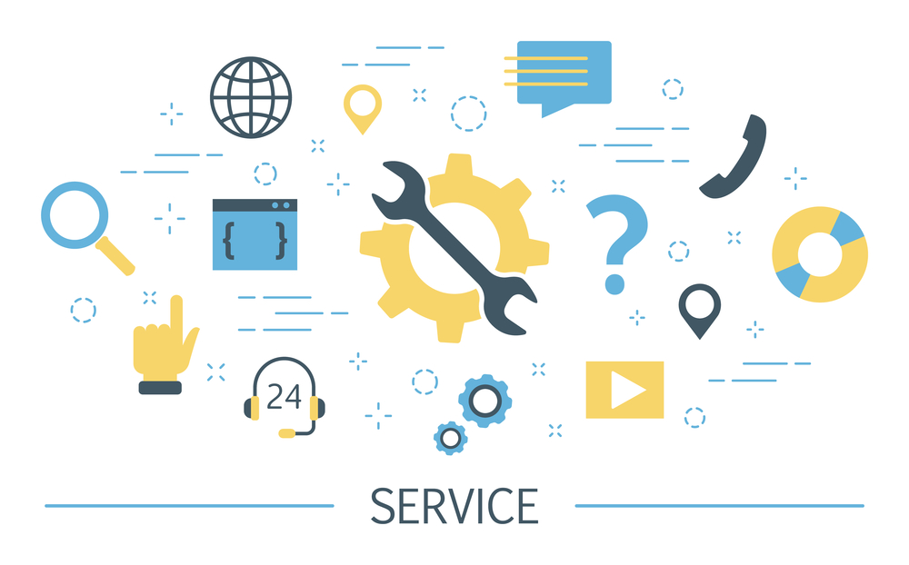

| Gestión de Servicios |
|
¿Qué es?La Gestión de Servicios es un concepto fundamental en el marco de trabajo de ITIL v4, que se centra en la creación, entrega y mejora continua de servicios que proporcionen valor a los clientes y a la organización en su conjunto. Esta disciplina abarca una serie de procesos, funciones y prácticas que permiten gestionar de manera efectiva los servicios de tecnología de la información (TI) para satisfacer las necesidades y expectativas del negocio. |
|
Componentes Claves
-
Servicio
Un servicio es una forma de ofrecer valor a los clientes facilitando resultados que ellos desean lograr sin tener que asumir los costos y riesgos específicos asociados. Los servicios pueden incluir productos tangibles, intangibles, procesos y experiencias.
-
Proveedor de Servicios
El proveedor de servicios es la entidad responsable de proporcionar el servicio al consumidor del servicio. Puede ser una organización interna o externa que suministra servicios a los clientes.
-
Consumidor de Servicios
El consumidor de servicios es la persona o entidad que utiliza o se beneficia del servicio proporcionado por el proveedor de servicios. Pueden ser clientes externos o usuarios internos dentro de la misma organización.
|
|  |
-
Valor del Servicio
El valor del servicio es la percepción del cliente sobre la utilidad y la importancia de un servicio en relación con sus necesidades y expectativas. El valor del servicio se co-crea a través de la interacción entre el proveedor de servicios y el consumidor de servicios.
-
Productos del Servicio
Los productos del servicio son los activos, recursos y capacidades utilizados para ofrecer servicios a los clientes. Pueden incluir hardware, software, documentación, personal, infraestructura y otros elementos necesarios para entregar el servicio.
-
Ciclo de Vida del Servicio
El ciclo de vida del servicio describe las etapas por las que pasa un servicio desde su concepción hasta su retirada. Incluye la planificación, diseño, transición, operación y mejora continua del servicio.
|
|
Enfoques y Prácticas en la Gestión de Servicios
-
Enfoque de Valor del Servicio
Según ITIL v4, la Gestión de Servicios se centra en el valor que los servicios de TI proporcionan al negocio. Esto implica entender las necesidades y expectativas del negocio, alinear los servicios con los objetivos estratégicos y medir el valor generado por los servicios en términos de beneficios para el negocio.
-
Prácticas Recomendadas
ITIL v4 promueve una serie de prácticas recomendadas en la Gestión de Servicios, como la gestión de incidentes, la gestión de problemas, la gestión de cambios, la gestión de activos y configuración, entre otras. Estas prácticas proporcionan un marco de referencia para la entrega efectiva y eficiente de servicios de TI.
-
Gestión de la Experiencia del Cliente
ITIL v4 reconoce la importancia de la experiencia del cliente en la Gestión de Servicios. Esto implica comprender las expectativas y necesidades del cliente, medir la satisfacción del cliente y tomar acciones para mejorar la experiencia del cliente en la entrega de servicios de TI.
|